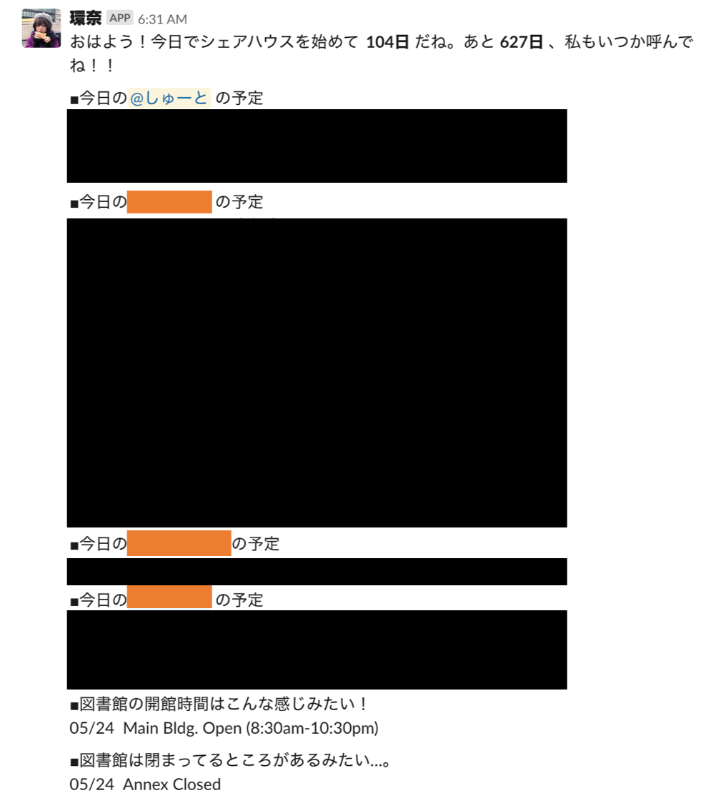
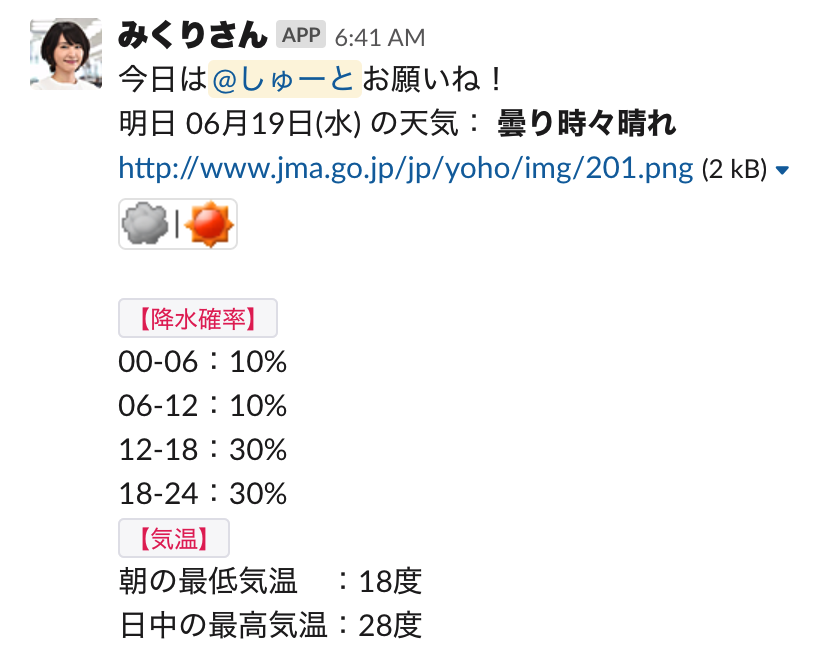

JS.13 GASでslackにメッセージを送る
GASとは
Google Apps Script(GAS, ガス)とは、Googleが提供するサーバーサイド・スクリプト環境です。JavaScript じゃないやんって感じかもしれませんが、JavaScript っぽいなと思ったのでかなり前から使っていたのですが一度まとめることにしました。
作ったもの
シェアハウスのslackで必要だと感じた「予定を共有すること」と「家事の役割分担をすること」を自動化しました。
その日の予定を共有する関数
以下のようなものができます。

listupEvent
gmailアドレスを受け取り、その日にある予定を全て取得する関数
function listupEvent(cal_id){
var list = "";
var cal = CalendarApp.getCalendarById(cal_id);
var events = cal.getEventsForDay(new Date());
for(var i=0; i < events.length; i++){
s = "";
if (events[i].isAllDayEvent()) {
s += Utilities.formatDate(events[i].getStartTime(),"GMT+0900","MM/dd ");
} else {
s += Utilities.formatDate(events[i].getStartTime(),"GMT+0900","MM/dd HH:mm");
s += Utilities.formatDate(events[i].getEndTime(), "GMT+0900","-HH:mm ");
}
s += events[i].getTitle();
list += s + "\n";
}
return list;
}
CalcuDaySpan
特定の日からの経過時間、特定の日までの残り時間を計算する関数。エモい。
function CalcuDaySpan(){
var start = Moment.moment('YYYY/MM/DD'); // 開始日（ −１日 ）
var end = Moment.moment('YYYY/MM/DD').add('years', 2);
var now = Moment.moment();
var message = 'おはよう！〇〇から今日で *' + now.diff(start, 'days') + '日* だね。××まであと *' + -now.diff(end, 'days') + '日* 、今日も濃い一日を！！\n';
return message;
}
postSlack
JSON形式で payload にslackに送信する際の情報を渡せば、slackにうまく送信されます。
// slackに送信する
function postSlack(payload){
var options = {
"method" : "POST",
'contentType': 'application/json',
'payload' : JSON.stringify(payload)
};
var url = "https://hooks.slack.com/services/XXX/YYY/ZZZ"; // Webhook URL
var response = UrlFetchApp.fetch(url, options);
var content = response.getContentText("UTF-8");
}
shareCalendar
上記の関数を駆使してslackにメッセージを送る関数。みんな大好き橋本環奈のアイコンで送信することで、朝の気分を少しでも良くします。
function shareCalendar() {
var list = "";
var s;
var Members = [ "<@UAAAAAAAA>", "<@UBBBBBBBB>", "<@UCCCCCCCC>", "<@UDDDDDDDD>"];
var Address = ["AAA@gmail.com", "BBB@gmail.com", "CCC@gmail.com", "DDD@gmail.com"];
for (var i=0; i<Members.length; i++){
s = listupEvent(Address[i]);
if (s != "") list += "\n■今日の" + Members[i] + "の予定\n" + s;
}
if (list != "") {
var title = CalcuDaySpan();
var payload = {
"channel" : "#channel name",
"username" : "bot name",
"text" : title + list,
}
postSlack(payload);
}
}
朝、その日の夜に洗濯物を取り込む人を決める関数
以下のようなものができます。

getWeatherData
気象庁 | 天気予報：東京都 のサイトをスクレイピングして、欲しい情報を取得します。
// 天気を取得する
function getWeatherData() {
// データ取得
var url = "http://www.jma.go.jp/jp/yoho/319.html"; // 東京の天気
var response = UrlFetchApp.fetch(url); // URL から html
var data = response.getContentText();
// 大雑把に分割＆配列化
var ary = data.split("<th class=\"weather\">")[2];
// 朝6時から24時までの降水確率
var ary_pop = ary.split("%"); // Probability Of Precipitation
ary_pop.pop();
var ary_rainy = [];
for (var i in ary_pop) {
var pop = ary_pop[i].substr(-2);
if (pop == ">0") pop = "0";
ary_rainy.push(pop + "%");
}
var str_pop = "00-06：" + ary_rainy[0] + "\n06-12：" + ary_rainy[1] + "\n12-18："+ ary_rainy[2] + "\n18-24：" + ary_rainy[3];
// 最低最高気温
var min = ary.split("min")[1].match(/>(.+?)</g)[0].slice(1,-1);
// 記録がない場合は「---」に置き換える
if (min == "</t") min = "---";
var max = ary.split("max")[1].match(/>(.+?)</g)[0].slice(1,-1);
if (max == "</t") max = "---";
var str_temp = "朝の最低気温 ：" + min + "\n日中の最高気温：" + max;
// 天気を言葉で取得
var weather = ary.match(/title="(.+?)"/g)[0].slice(7,-1);
// 天気の画像取得
var img = ary.match(/src="(.*?)"/g)[0].slice(5,-1);
var img_url = "http://www.jma.go.jp/jp/yoho/" + img;
var weather_str = "*" + weather + "*\n" + img_url + "\n`【降水確率】`\n" + str_pop + "\n`【気温】`\n" + str_temp + "\n";
return weather_str;
具体的には、以下の内容を返します。
*曇り時々晴れ*
http://www.jma.go.jp/jp/yoho/img/201.png
`【降水確率】`
00-06：0%
06-12：10%
12-18：30%
18-24：30%
`【気温】`
朝の最低気温 ：19度
日中の最高気温：28度
getDayOfWeek
date.getDay() がインデックスで曜日を返すので、それを単純に日本語に直すだけの関数です。
// 曜日を取得する
function getDayOfWeek(date) {
var dayOfWeek = date.getDay();
var dayOfWeekStr = [ "日", "月", "火", "水", "木", "金", "土" ][dayOfWeek];
return dayOfWeekStr
}
getDayOfToday
今日の日付と曜日を取得する関数です。
function getDayOfTomorrow(){
// 明日の日付取得
var date = new Date();
var today = Utilities.formatDate( date, 'Asia/Tokyo', 'MM月dd日');
var youbi = getDayOfWeek(date);
var str_date = today + "(" + youbi + ")";
return str_date; // 06月19日(水) など。
}
assignRole
洗濯物を取り込む人を決める重要な関数です。
function assignRole(){
// 洗濯物を取り込む人を決定
// 各メンバーのID
var Members = [ "<@UAAAAAAAA>", "<@UBBBBBBBB>", "<@UCCCCCCCC>", "<@UDDDDDDDD>"];
var num = Members.length; // 人数
var index = Math.floor(Math.random() * num); // ランダムで 0~num-1 を生成
var role = Members[index];
var str_date = getDayOfToday();
var weather_str = getWeatherData();
var payload = {
"text" : "今日は" + role +"お願いね！\n今日 " + str_date + " の天気： " + weather_str,
"channel" : "#laundry",
"username" : "みくりさん",
"icon_url" : "https://pbs.twimg.com/profile_images/804164014473289728/OCNtA0UO_400x400.jpg", // アイコン画像
}
postSlack(payload);
}
明日の朝洗濯物を干す人を決める関数
基本的には上と同じです笑
大きな変更点といえば、今回はランダムで2人アサインしているということです。朝洗濯物を干すのは大変ですからね。
あと、平匡さんにしてます。わかりづらくなってしまうので。
function assignRole(){
// 洗濯物を干す人を決定
var Members = [ "<@UAAAAAAAA>", "<@UBBBBBBBB>", "<@UCCCCCCCC>", "<@UDDDDDDDD>"];
var num = Members.length; // 人数
var index = Math.floor(Math.random() * num);
var index2 = Math.floor(Math.random() * num);
while (index === index2){
index2 = Math.floor(Math.random() * num);
Logger.log(index2);
}
var role = Members[index];
var role2 = Members[index2];
var str_date = getDayOfTomorrow();
var weather_str = getWeatherData();
var payload = {
"text" : "明日の朝は" + role + "と" + role2 +"お願いね！\n明日 " + str_date + " の天気： " + weather_str,
"channel" : "#laundry",
"username" : "平匡さん",
"icon_url" : "https://i.pinimg.com/originals/4a/47/b7/4a47b71d373217dc578f05a7b9ff5ce0.jpg", // アイコン画像
}
postSlack(payload);
}